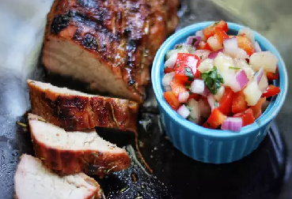

Grilled Caribbean-Spiced Pork Tenderloin with Peach Salsa

Description:
A quick and easy way to grill pork tenderloin. Coated in a Caribbean spice
mixture, grilled, and served with homemade peach salsa.
Ingredients:
- ¾ cup fresh peaches, peeled and diced
- 1 small red bell pepper, chopped
- 2 tablespoons finely chopped red onion
- 2 tablespoons minced fresh cilantro
- 1 tablespoon lime juice
- 1 clove garlic, minced
- ⅛ teaspoon salt
- ⅛ teaspoon ground black pepper
- 2 tablespoons olive oil
- 1 tablespoon brown sugar
- 1 tablespoon Caribbean jerk seasoning
- 1 teaspoon dried thyme
- 1 teaspoon dried rosemary
- ½ teaspoon seasoned salt
- 1 pork tenderloin
Steps:
-
Combine peaches, bell pepper, red onion, cilantro, lime juice, garlic,
salt, and pepper in a bowl. Set peach salsa aside.
-
Combine olive oil, brown sugar, Caribbean jerk seasoning, thyme,
rosemary, and seasoned salt in a second small bowl. Rub tenderloin with
the spice mixture.
-
Preheat an outdoor grill for medium heat and lightly oil the grate.
-
Place tenderloin on hot grill and cook covered for 9 to 11 minutes. Turn
and grill until tenderloin is slightly pink in the center, 9 to 11
minutes more. An instant-read thermometer inserted into the center
should read at least 145 degrees F (63 degrees C). Remove from heat,
cover, and let sit for 5 minutes before slicing. Serve with peach salsa.
Back to from page